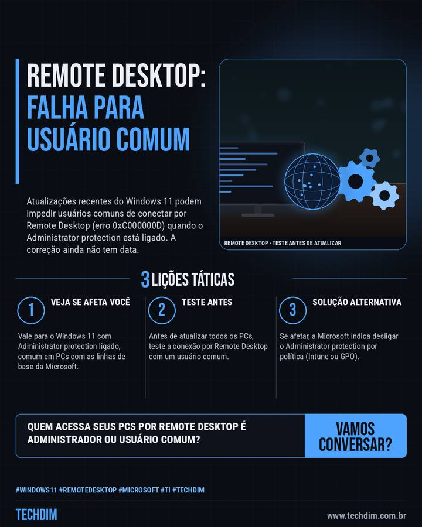

Notícia de tecnologia
Windows 11: Remote Desktop pode falhar para usuários comuns após atualização (0xC000000D)
Atualizações recentes do Windows 11 podem impedir usuários comuns de conectar por Remote Desktop (erro 0xC000000D) quando o Administrator protection está ligado. A correção ainda não tem data.

Em resumo
- A Microsoft confirmou: após a prévia de 22/09 (KB5124010) ou atualizações seguintes, usuários comuns podem falhar ao conectar por Remote Desktop, com o erro 0xC000000D
- Atinge o Windows 11 (24H2, 25H2, 26H1 e 26H2) com Administrator protection ligado, sobretudo PCs de empresas. As linhas de base da Microsoft já o ativam por padrão
- Solução alternativa: desligar o Administrator protection por política (Intune ou GPO). A correção virá em atualização futura, sem data; avalie o risco antes de desligar
Usa Remote Desktop em PCs com Windows 11? Teste o acesso de um usuário comum antes de atualizar todos.
Por que importa
Aviso oficial da Microsoft sobre falha de acesso remoto após atualização, com solução alternativa para quem administra PCs com Windows 11.
O que fazer na prática
- Veja se afeta você. Vale para o Windows 11 com Administrator protection ligado, comum em PCs com as linhas de base da Microsoft.
- Teste antes. Antes de atualizar todos os PCs, teste a conexão por Remote Desktop com um usuário comum.
- Solução alternativa. Se afetar, a Microsoft indica desligar o Administrator protection por política (Intune ou GPO).
Fontes consultadas
Mais do Radar de hoje
Leia também
Este texto resume as fontes citadas na data de publicação. Confira sempre o aviso oficial do fabricante antes de agir em produção.